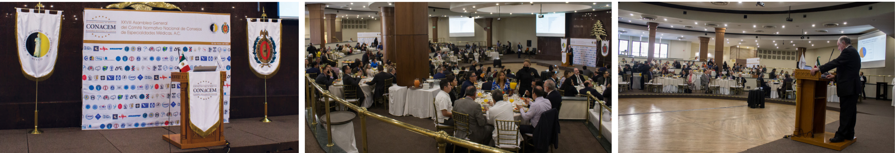

EDICIÓN
ENERO - ABRIL 2023
NÚMERO 5
EDITORIAL
Certeza CONACEM
Dr. José Ignacio Santos
Presidente del CONACEM

EDICIÓN
ENERO - ABRIL 2023
NÚMERO 5
EDITORIAL
Dr. José Ignacio Santos
Presidente del CONACEM
Ha transcurrido la cuarta parte del 2023 y la evolución del Comité Normativo Nacional de Consejos de Especialidades Médicas se mantiene con la modernización de sus procesos en la certificación y recertificación, con el compromiso de los 47 Consejos con registro de idoneidad para continuar en esa línea ascendente y en con el crecimiento en el número de médicos especializados que dan una atención con de calidad garantizada, gracias a su actualización constante en técnicas, conocimientos y habilidades que garanticen los mejores tratamientos para la salud de sus pacientes
En el número 5 de nuestra revista CERTEZA, podrán encontrar una semblanza de lo que fue la XXVIII Asamblea General del CONACEM, realizada en el mes de marzo, que contó con la participación, siempre entusiasta y comprometida de los 47 Consejos. Tuvimos la oportunidad de presentar el trabajo realizado en el añodurante el 2022 con total y absoluta transparencia. Gracias a todos por su respaldo y muy grata asistencia.
Damos la bienvenida a la colaboración del Comité Normativo Nacional de Medicina General, (CONAMEGE, A.C.), con nuestra revista, ya que a partir de este número podremos saber más de la labor fundamental que realiza para robustecer la práctica de la atención primaria de la salud en nuestro país, mediante la certificación de sus médicos.
Encontraremos en el contenido de este núumero también la colaboración de distintos Consejos de Especialidades Médicas que enriquecen la información que le presentamos pensando en su interés, como lector de buenos textos.
Como órgano auxiliar del gobierno federal, el CONACEM mantiene una estrecha cooperación con las autoridades de las secretarías de Educación Pública y de Salud, en particular con la dirección general de Profesiones y con la dirección general de Calidad y Educación en Salud, respectivamente, quienes coinciden con el fortalecimiento de la medicina especializada en nuestro país. Así como con las comisiones de salud de las cámaras de senadores y de diputados, quienes entienden la función del CONACEM en las tareas que le han sido conferidas y así nos lo han manifestado, para que México continúue con un organismo sólido que norme la práctica médica especializada y contribuya a proporcionar una atención con altos estándares de calidad y seguridad al paciente.
Tengan toda la certeza de que continuaremos con ese compromiso
social ineludible
y contribuir a que la medicina mexicana permanezca siempre a la
vanguardia.
Muchas gracias.
